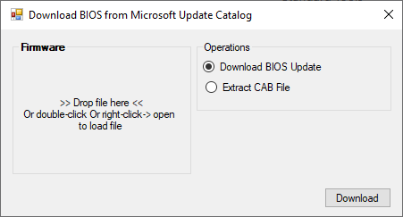

<style>
    .center {
        display: block;
        margin-left: auto;
        margin-right: auto;
        width: 50%;
      }

    a {
      text-decoration: none;
      display: inline-block;
      padding: 8px 16px;
    }
    
    a:hover {
      background-color: #ddd;
      color: black;
    }
    
    .previous {
      background-color: #f1f1f1;
      color: black;
    }
    
    .next {
      background-color: #160042;
      color: white;
    }
    </style>

<section class="support section bg-gray">
	<div class="container">
    <div class="container" style="text-align:justify; margin-bottom:50px;">
      <h4 class="join">Stock Firmware Tools</h4>
      <p>The tools mentioned in this category have the sole purpose of creating stock firmware from zip file, downloaded Bios Update Utilities from multiple brands.</p>
      
        <br>
      <h2>16.Acer/InsydeFlash</h2>
      <p>For more information, kindly click this link.</p>
      
      <br>
      <h2>17. Samsung</h2>
      <p>For more information, kindly click this link..</p>
      
      <br>
      <h2>18. Dell</h2>
      <p>For more information, kindly click this link.</p>
      
      <br>
      <h2>19. HP</h2>
      <p>For more information, kindly click this link..</p>
      
      <br>
      <h2>20.Toshiba</h2>
      <p>For more information, kindly click this link.</p>
      
      <br>
      <h2>21. Fujitsu</h2>
      <p>This feature will be available on the future updates.</p>
      
      <br>
      <h2>22. Lenovo</h2>
      <p>For more information, kindly click this link.</p>
      
      <br>
      <h2>23. Apple</h2>
      
      <br>
      <h2>24. LG</h2>
      
      <br>
      <h2>25. Asus</h2>
      <p>For more information, kindly click this link.</p>
      
      <br>
      <h2>26. Sony</h2>
      <p>For more information, kindly click this link.</p>
      
      <br>
      <h2>27. MS Catalog</h2>
      
      <br>
      <h2>28. MSI</h2>
      <p>For more information, kindly click this link.</p>
      
      <br>
      <h2>29. ECS</h2>
      <p>For more information, kindly click this link.</p>
      
      <br>
      <h2>30. Gigabyte</h2>
      
      <br>
      <h2>31. Asrock</h2>
      

    <a href="{{ site.baseurl }}/bios-creator/uefi-firmware-tools" class="previous">&laquo; Previous</a>
    <a href="{{ site.baseurl }}/bios-creator/password-tools" class="next">Next &raquo;</a>

		</div> <!-- End row -->
	</div> <!-- End container -->
</section> <!-- End section -->